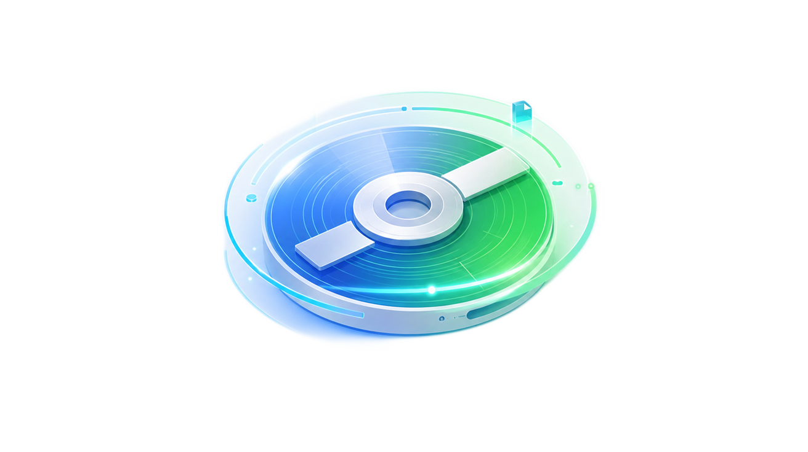
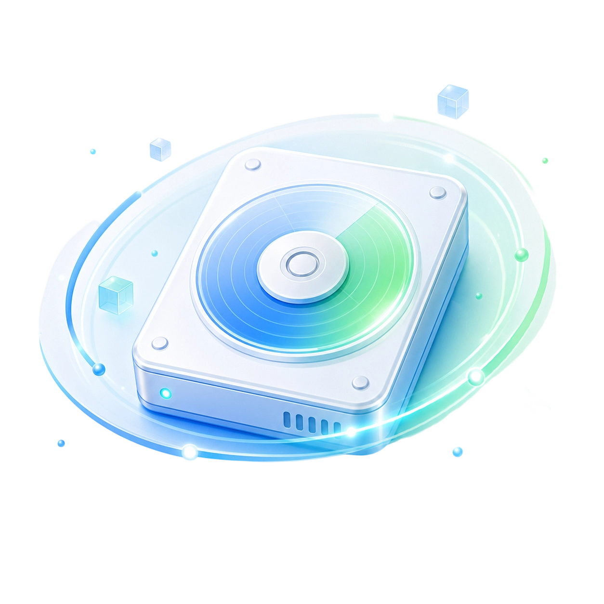
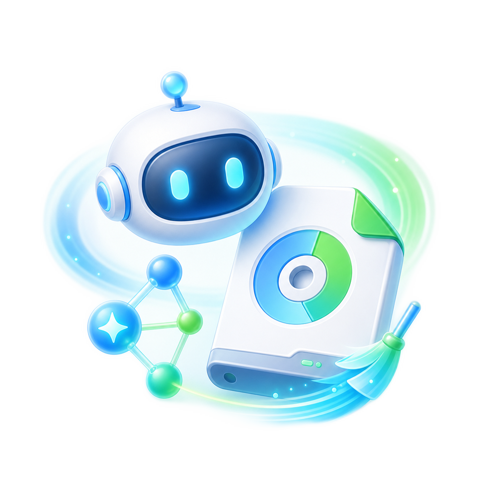
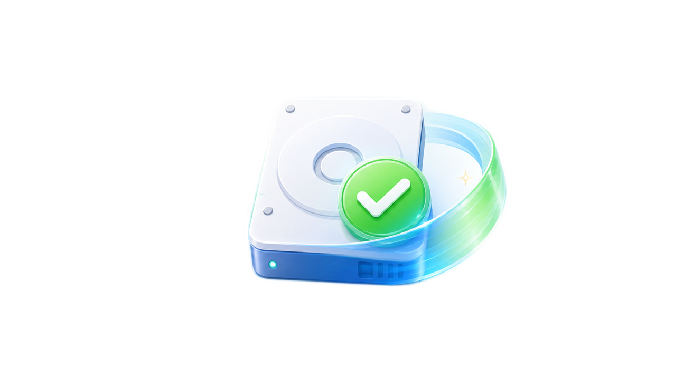

智能扫描 Windows 缓存与临时文件，极简模式一键释放空间，
高级模式深度分析 + AI 辅助决策，安全高效管理磁盘
面向普通用户的一键清理，和面向进阶用户的深度分析，一套工具两种体验
为普通用户设计的六阶段引导流程，无需任何专业知识即可完成 C 盘清理。内置安全规则引擎自动识别可安全删除的缓存文件，全程反馈扫描与清理进度。

面向进阶用户的完整工具箱，侧边导航 + 多标签页布局，涵盖空间概览、逐项清理、大文件分析、AI 助手等功能模块，细致掌控每一 MB 空间。

从快速扫描到深度分析，从大文件管理到 AI 建议，一站式 C 盘管理方案
智能识别 temp、browser、app、system 四类缓存，安全规则引擎自动判定可删性，数秒完成扫描。
ECharts 饼图展示各分类占比，Top 10 文件排行一目了然。支持 drill-down 逐层查看，空间占用心中有数。
递归扫描用户指定目录，按大小排序。支持按文档/视频/压缩包等类型筛选，配合 AI 分析决定是否清理。
接入 OpenAI 兼容 API（DeepSeek / MiniMax / SiliconFlow 预设支持），智能分析文件安全性，给出清理建议。
所有删除走系统回收站（shell.trashItem），支持清理前创建 Windows 系统还原点。双校验机制防止误删系统文件。
每次清理操作记录详细日志，包含文件路径、大小、操作时间。支持一键打开日志文件夹回溯审计。
接入大语言模型，让 AI 帮你判断哪些文件可以安全清理
AI 助手模块支持上下文对话，你可以发送扫描摘要让 AI 给出清理策略，也可以针对单个文件做深度分析。AI 会返回文件类型、用途、风险等级和建议操作。

清理工具的首要任务是保障数据安全，每一处设计都为安全考虑
所有文件删除使用 Electron shell.trashItem 移至回收站，误删可一键恢复。不做永久删除操作。
清理前可选创建 Windows 系统还原点（PowerShell Checkpoint-Computer），系统级回退保障。
扫描时和删除时两次调用 isExcludedPath 校验，阻止 C:\\Windows、C:\\Program Files 等关键路径被操作。
Electron contextIsolation + nodeIntegration: false，渲染进程无法直连 Node.js，保障主进程安全。
规则引擎为每条文件标记 safety 等级：safe（绿色可删）/ caution（黄色慎删）/ keep（灰色保留）。
日志系统记录每一次删除操作的详细信息，支持审计回溯，清理历史清晰可查。

从扫描到删除，每个环节都有相应的安全机制兜底，形成完整的安全链路。
Electron + React 19 + TypeScript，前沿技术打造高效可靠的桌面体验
主进程 · preload 桥接 · 渲染进程，清晰的职责分离与安全的通信机制